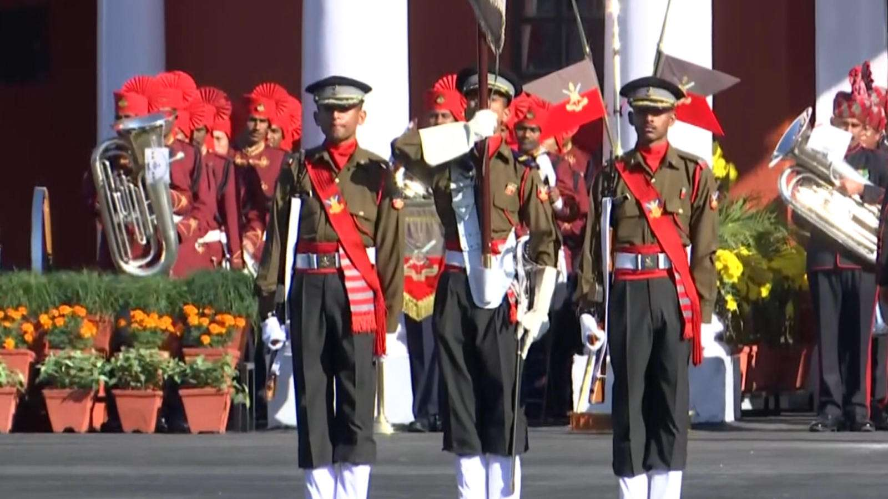
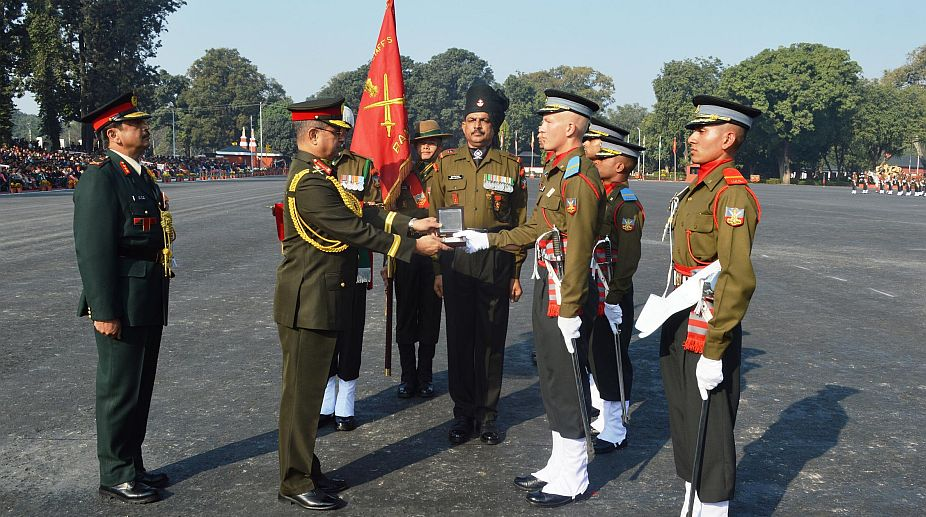
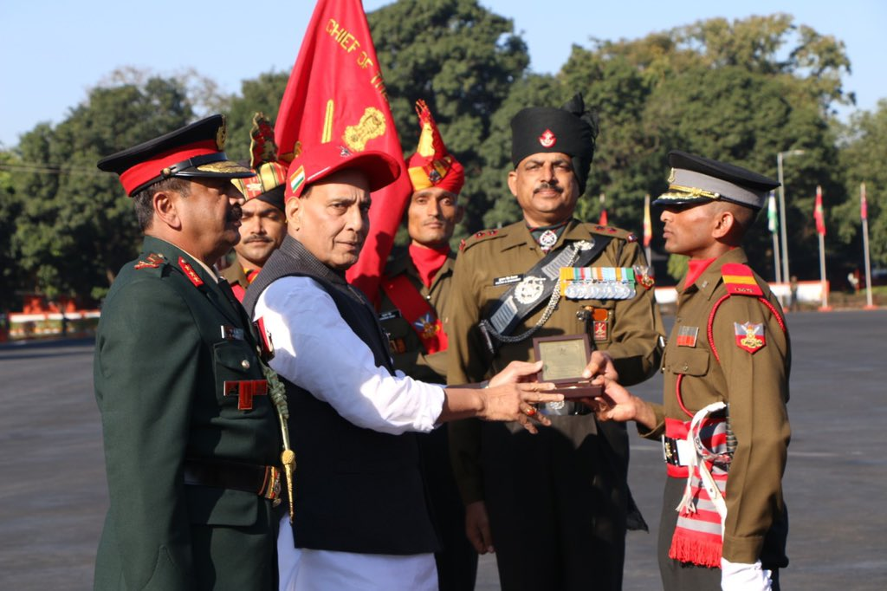
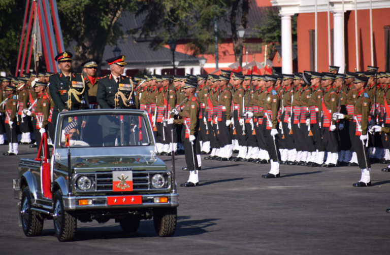

TGC - Technical Graduate Course
  
What is TGC Entry In Indian Army
TGC entry also know as Technical Graduate Course Entry is a type of entry through which an engineering graduate(only male) can join the Indian Army as an officer. TGC entry is specific for engineering students who can apply for it from final year onward. Lets talk more about TGC entry for Indian Army.
Every year Indian army invites application for TGC entry for the course commences at Indian Military Academy. TGC stands for Technical Graduate Course and it is notified by Additional Directorate General Recruiting / AG Branch in May/June and Nov/Dec.
Who can apply for TGC entry
All male engineering students studying in final year or passed out, can apply for this entry if they fulfill the eligibility criteria as mentioned below.

Eligibility Criteria for TGC entry
Age: 20 and 27 years as of first day of month in which course is due to commence.
Qualification: BE / B Tech final appearing & degree holders in notified streams of Engineers.
Eligible Branch: As per latest notification
- Civil (including mining/ construction)
- Electrical or Electrical & Electronics
- Mechanical
- Automobile/Workshop Technology
- Aeronautics/Aviation/Aerospace/Ballistics/Avionics
- Food Tech/Bio Tech/Bio Medical Engg
- Chemical Engg
- Electronics & Telecom/Telecommunication/Electronics & Comn/Satellite Comm.
- Metallurgy & Explosives/Metallurgical Engg
- Industrial/Manufacturing Engg/Industrial Engg & Mgt/Production
- Electronics/Opto Electronics/Fibre Optics/Micro Electronics & Microwave
- Electronics & Instrumentation/Instrumentation
- Architecture/ Building Constr Technology
- Computer Sc & Engg/Computer Technology/Info Tech / M.Sc
- Computer Sc
How to apply for TGC entry
- Wait for the notification of TGC.
- One must apply online for TGC entry through joinindianarmy.nic.in , more details here.
- After submitting application online, print your online application form and send it along with other documents as mentioned in the notification.
Is there any Cut off for TGC entry
- All eligible male engineering graduates can apply for TGC entry, later Indian army decides the cut off percentage and shortlist the candidates out of all applicants. So at the time of applying, there is no percentage criteria.
What is the selection procedure of TGC entry
- Apply for TGC online
- Army will declare the list of shortlisted candidates based on their degree percentage.
- Get the call letter for Direct SSB Interview, if shortlisted.
- Attended five days SSB Interview process.
- Attend medical examination, if gets recommend.
- Wait for the all India merit list of TGC.
- Join Indian Military Academy, if Shortlisted and medically fit.
How TGC entry is different from other entries for Indian Army
- TGC entry is introduced for Engineering graduates only, one who enters through this entry goes for some technical work in Indian Army.
- Training period is one year unlike other entries which is one and half year.
- Ante Date Seniority, One year ante date seniority from date of commission will be applicable only for Officers having Engineering Degree (BE/B.Tech) from a recognized institution/university.
- So lots of benefits in going through this entry.